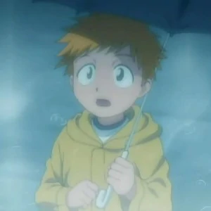
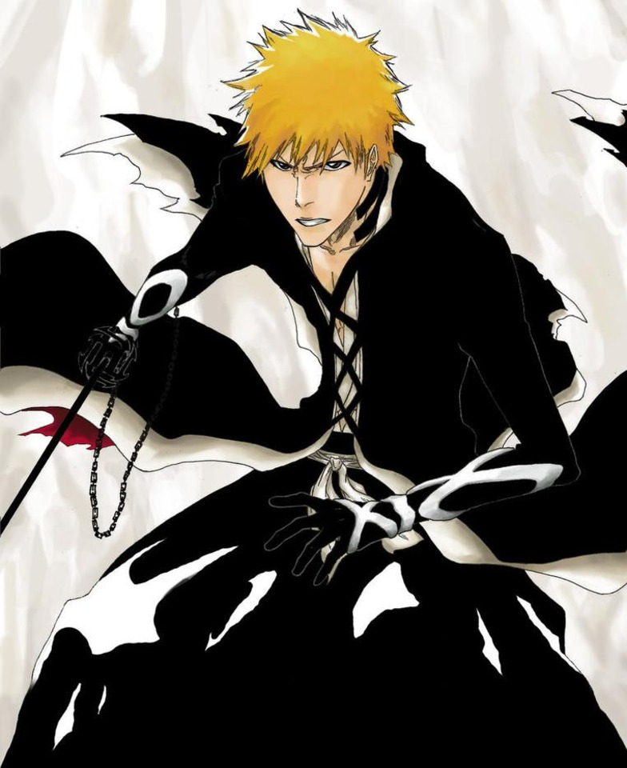

Prior to the story's beginning, Ichigo and his mother, Masaki, were walking home in the heavy rain. At some point, Ichigo noticed a little girl about to jump into the river and end her own life. However, Masaki knew that it was a hollow and tried to stop Ichigo from running towards her, but he didn't listen to her. Ichigo soon lost consciousness and woke up to Masaki lying on him, drenched in blood. Ichigo's traumatic past caused him to be a bit troublesome as he would always skip school and get into fights from that point onwards. It's possible that Ichigo subconsciously blamed himself for not being strong enough to save her, or because he was bullied for having orange hair. 
Even before Masaki's death, Ichigo had been devoted to protecting the ones he cared about. His father told him that his name meant to "protect one thing," which for Ichigo was his mother. And when his sisters were born, he joined a dojo to learn how to fight for their sake.
Ichigo's troublesome attitude only got worse as he grew up. Instead of just skipping class, he was also stubborn, impulsive, and very short-tempered. He always tried to act what he dubbed "cool." He'll always fight back, while keeping his cold face permanently scowled.
As a Shinigami, however, Ichigo's demeanor seems to shift. Instead of picking random fights with those who disprespect him, he fights to honor those he cares about. Additionally, he even fights for his enemies' sake! Ichigo despises anyone who abandons their own allies, regardless of their relation to himself. Ulquiorra was just one of the many who were called "trash" after putting up such a fight against Ichigo, and thus he had no sympathy for Ulquiorra's ally while still honoring Ulquiorra.
Ichigo consistently fights against threats that are way too powerful for him, yet he is steadfast in working harder to defeat them. As just one example of his determination, he trained for 3 months straight! Zero breaks! Ichigo doesn't quit, even when he lost his powers, he still itched to protect those he cared about. Although lovable, Ichigo is not a complex character. He represents the classic character who cares about his allies and fights beyond his limits to protect them, but that doesn't take away from his feats. 